장소명, 지역(제물포·송도·강화·영종…), 테마(섬·역사·야경·미식), 자료명, 공지 제목으로 검색할 수 있습니다.

지역별 · 장소별 여행 상세소개
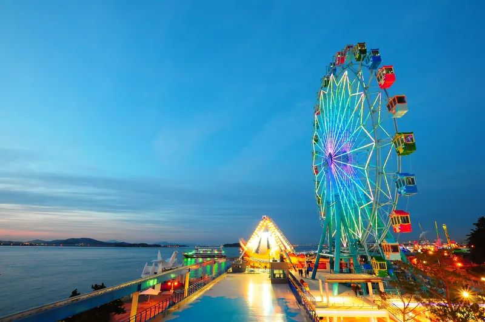
개항장·차이나타운·월미도·배다리 (구 중구 내륙+동구)
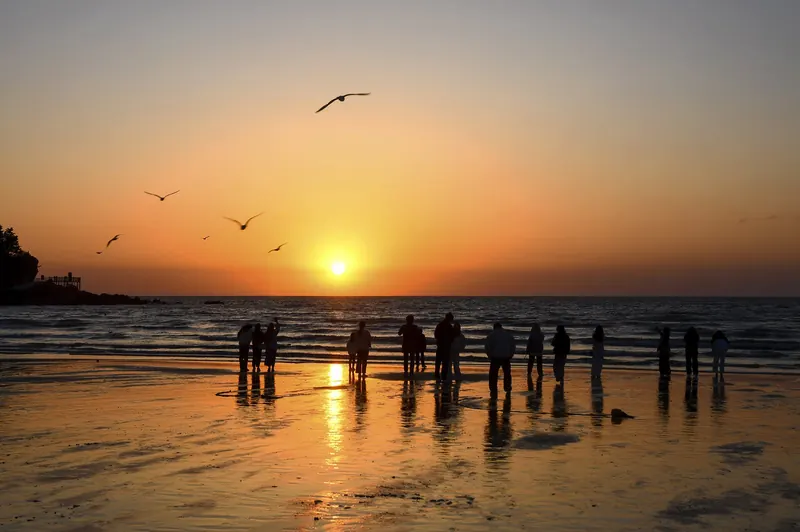
인천공항·복합리조트·을왕리·무의도
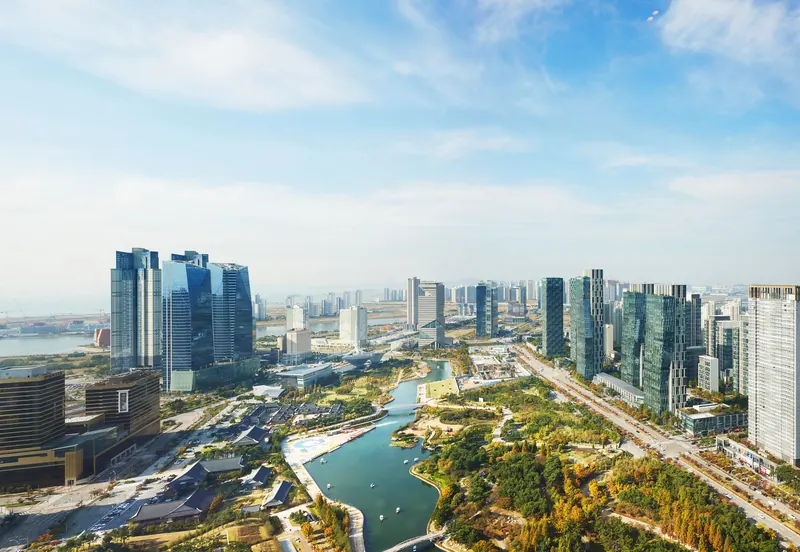
송도국제도시·센트럴파크·컨벤시아
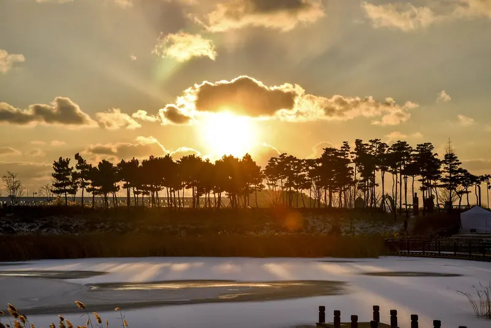
청라·아라뱃길·정서진 (구 서구 서부)
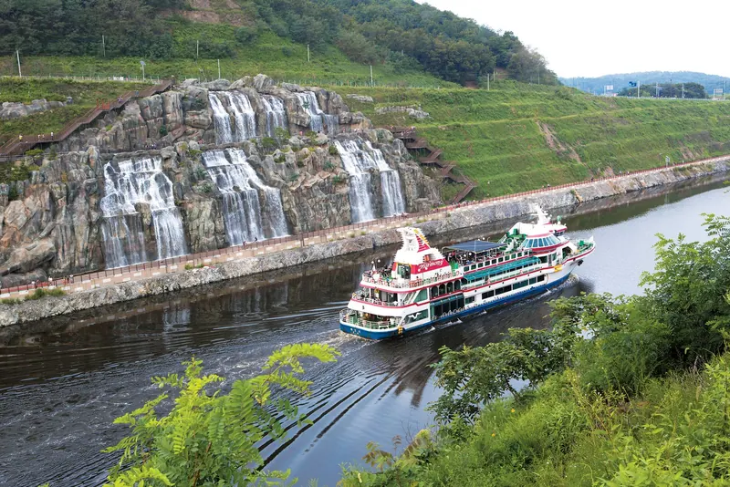
검단신도시·드림파크·아라폭포 (구 서구 북부)
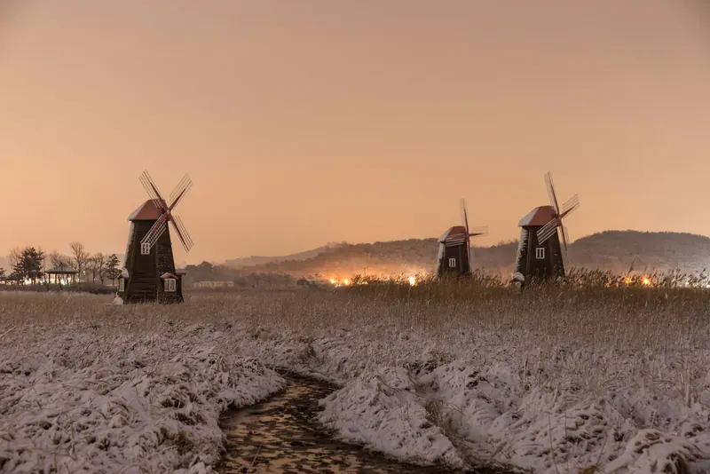
소래포구·소래습지·인천대공원
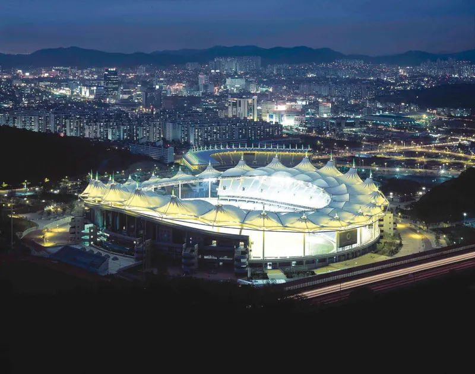
문학경기장·수봉공원·인천도호부
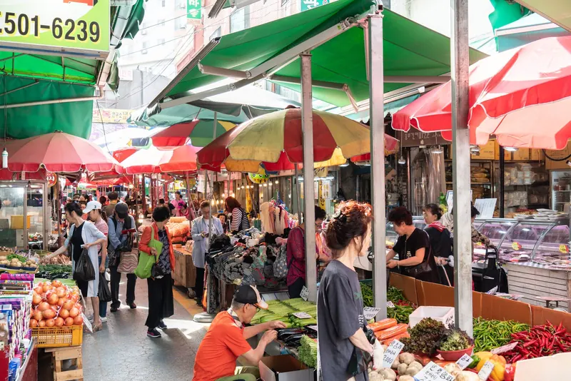
부평 문화의거리·평리단길·부평시장
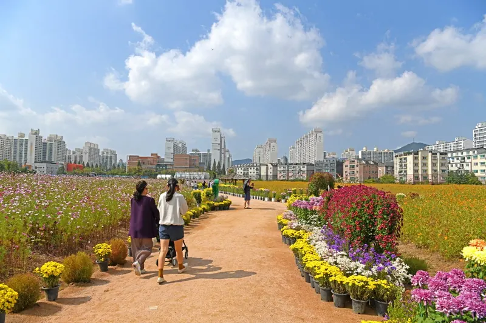
계양산·계양꽃마루·아라온

전등사·고인돌·평화전망대·교동도

백령도·대청도·덕적도·연평도·장봉도
47 곳
바닷바람이 스치는 산책길과 놀이기구, 밤이면 불빛이 어우러지는 인천의 추억 명소. 월미테마파크의 대관람차에서 서해 노을을 한눈에 담고, 월미문화의거리에서 해양 조형물과 공연을 즐길 수 있습니다.
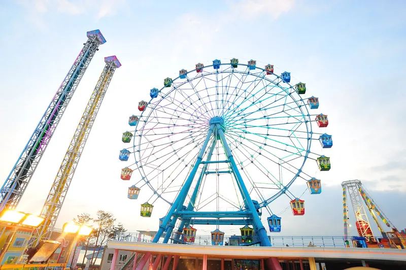
제물포구다양한 놀이기구와 LED 조명이 어우러진 바다 옆 테마파크. 대관람차·바이킹·디스코팡팡이 명물로 데이트 코스로도 인기가 높습니다.
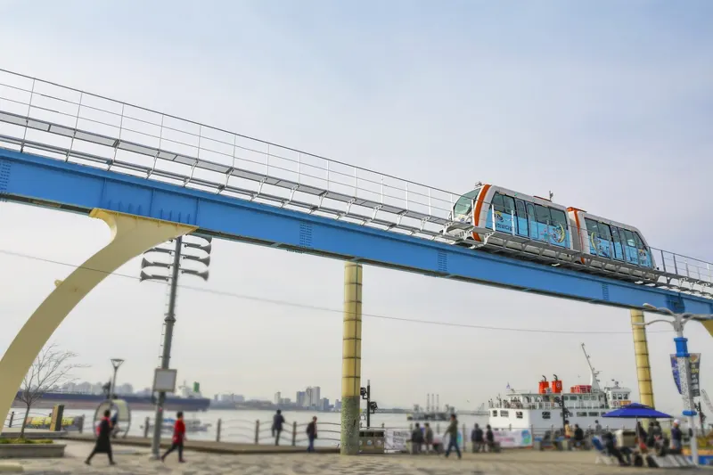
제물포구인천 월미도를 순환하는 국내 최장 도심형 관광모노레일. 총 6.1km, 평균 시속 9km로 월미도·월미공원·한국이민사박물관을 잇는 하늘 길 위에서 서해와 항만을 조망합니다.
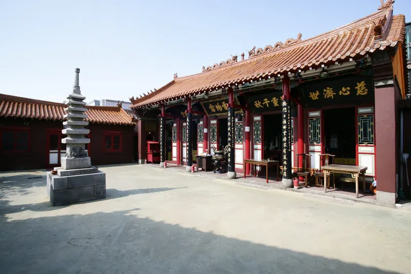
제물포구1883년 개항과 함께 형성된 한국 최초의 차이나타운. 붉은 등과 패루, 삼국지 벽화거리, 짜장면박물관이 있으며 짜장면의 발상지로 널리 알려져 있습니다.
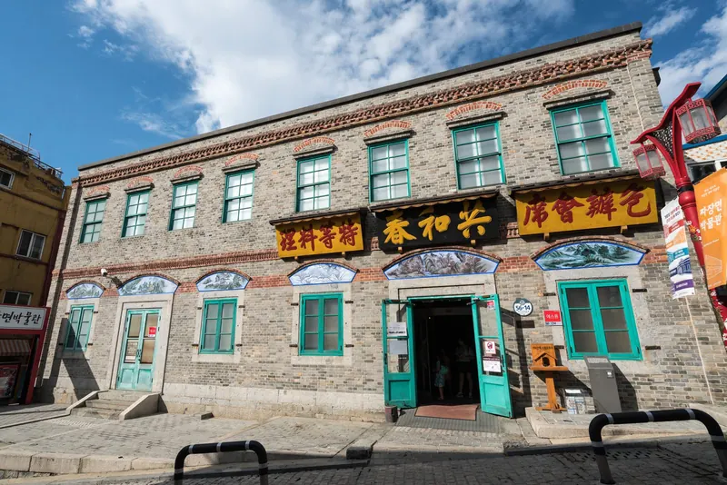
제물포구1930년대 중국요릿집 '공화춘' 건물을 리모델링한 박물관. 짜장면의 유래와 변천, 당시 주방과 생활사를 체험형 전시로 보여줍니다.
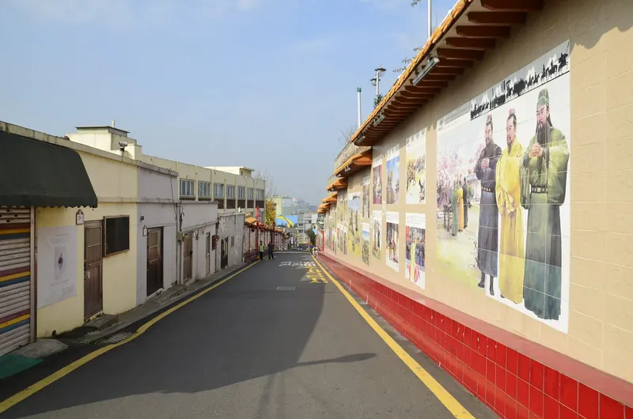
제물포구차이나타운 중심 계단을 따라 삼국지와 초한지의 장면을 벽화로 재현한 거리. 도원결의부터 적벽대전까지 이야기와 함께 걷는 테마길입니다.
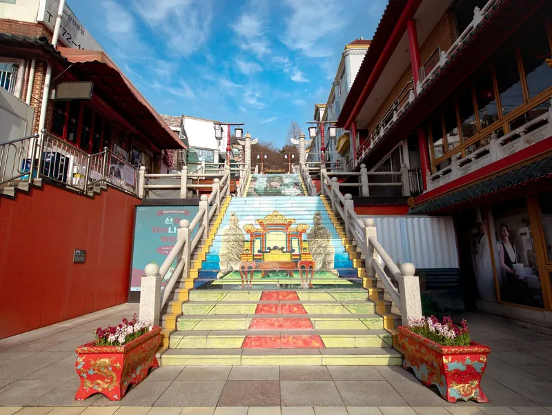
제물포구차이나타운 언덕길에 조성된 테마 계단. 중국 전통 문양과 상징을 화려한 색감으로 표현해 포토존으로 인기가 높습니다.
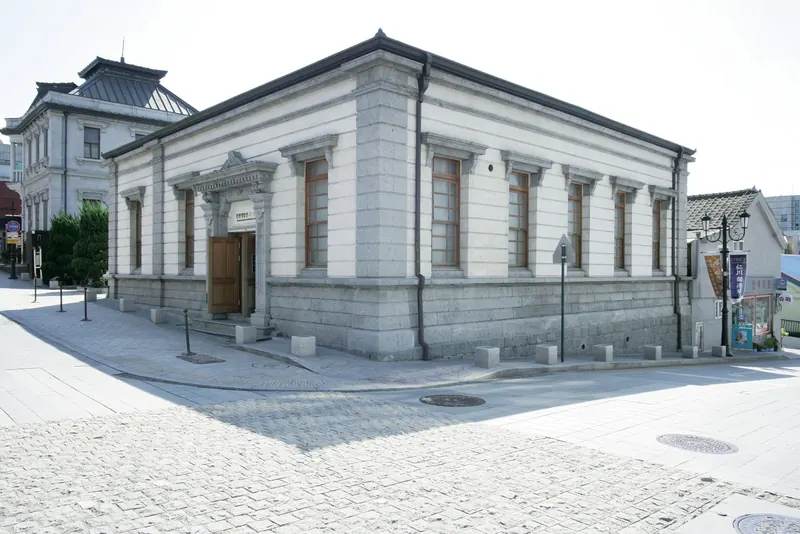
제물포구1883년 개항의 기억이 남아 있는 거리. 인천개항박물관(구 일본제1은행), 근대건축전시관, 인천아트플랫폼, 대불호텔전시관이 걸어서 닿는 거리에 모여 있는 '인천 개항장 스마트관광도시' 구역입니다.
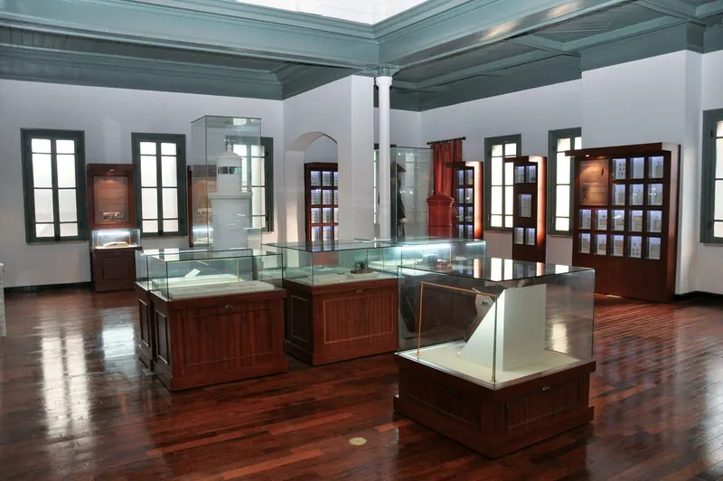
제물포구개항기 은행 건물을 전시관으로 활용해 인천의 근대 문물과 개항장 건축의 역사를 보여줍니다. 조명 아래 당시 금고와 장부가 그대로 남아 있습니다.
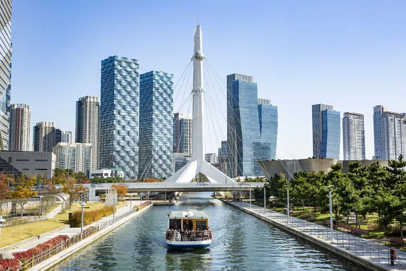
연수구바닷물을 끌어와 조성한 국내 최초의 해수공원. 수상택시·문보트, 한옥마을, 산책로와 고층 빌딩의 스카이라인이 어우러져 낮과 밤 모두 사진 명소입니다.
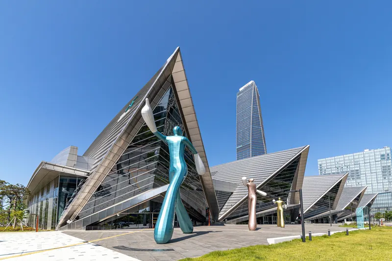
연수구태백산맥을 형상화한 지붕이 인상적인 국제회의복합지구의 중심 시설. 다양한 박람회·국제회의가 열리며 송도의 MICE 관광을 이끄는 랜드마크입니다.
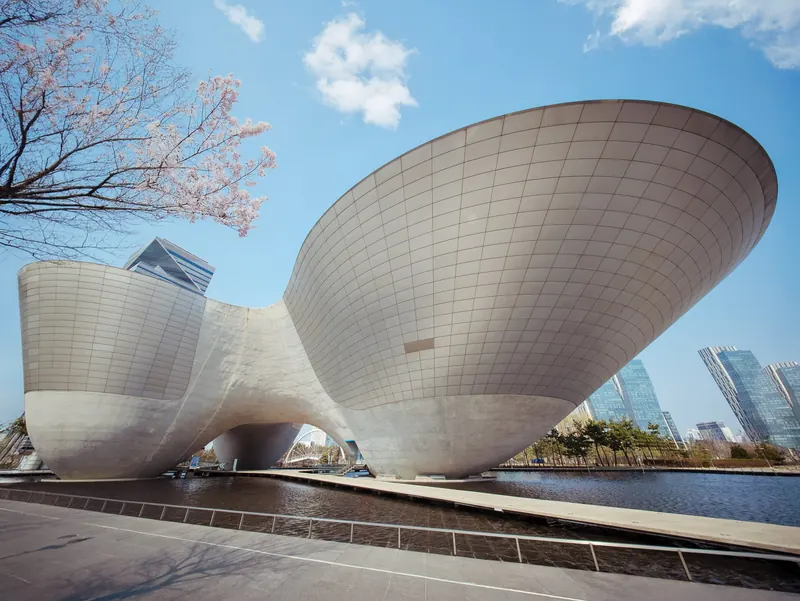
연수구'하늘·바다·땅'을 상징하는 세 개의 그릇 형상 복합문화공간. 센트럴파크 수변에 떠 있는 듯한 야경이 송도국제도시를 대표하는 포토존입니다.
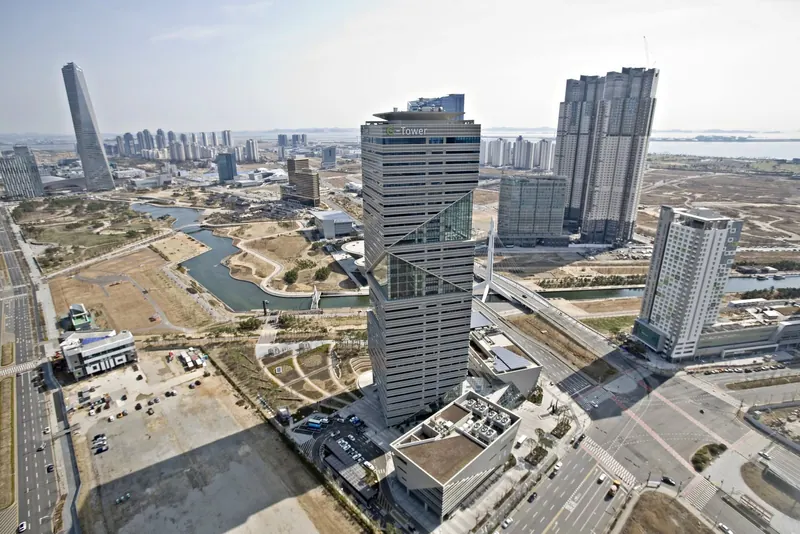
연수구33층 전망대에서 송도국제도시와 인천 앞바다가 한눈에. IFEZ(인천경제자유구역) 홍보관에서 미래 도시의 모습을 디지털 체험으로 만납니다.
초승달처럼 휘어진 백사장과 소나무 숲, 썰물 때 드러나는 갯벌과 서해 낙조로 유명한 인천 대표 해수욕장. 공항에서 차로 20분이면 닿는 환승관광 명소입니다.
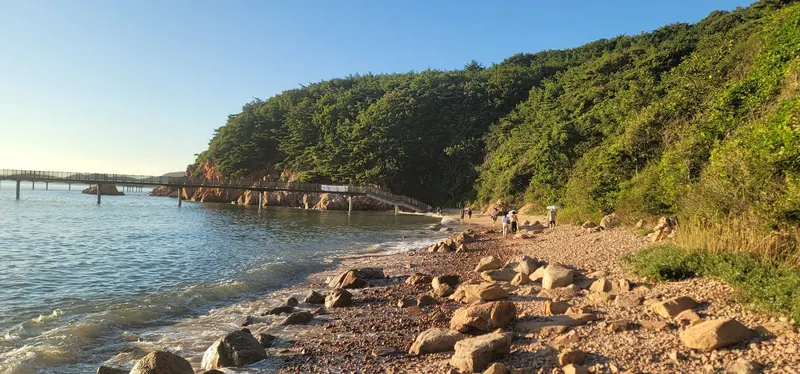
영종구무의도 해안을 따라 이어진 2.5km 바다 위 탐방로. 조성 데크길을 따라 하나개해수욕장과 호룡곡산을 잇는 트레킹이 인기이며, 영종도에서 다리로 연결되어 접근이 쉽습니다.
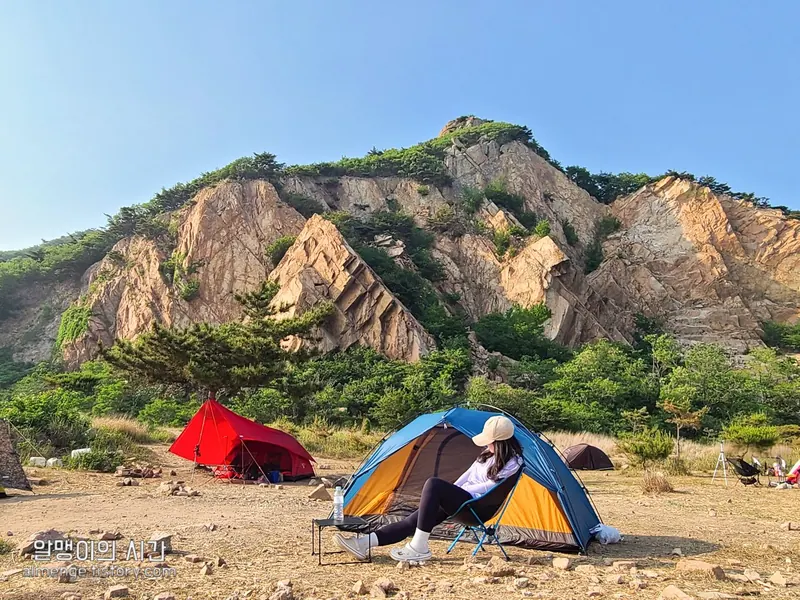
영종구'무의도'와 아프리카 '세렝게티'를 합쳐 부르는 이름. 넓은 초원과 기암이 어우러져 이국적인 풍경을 만드는 무의도의 숨은 명소입니다.
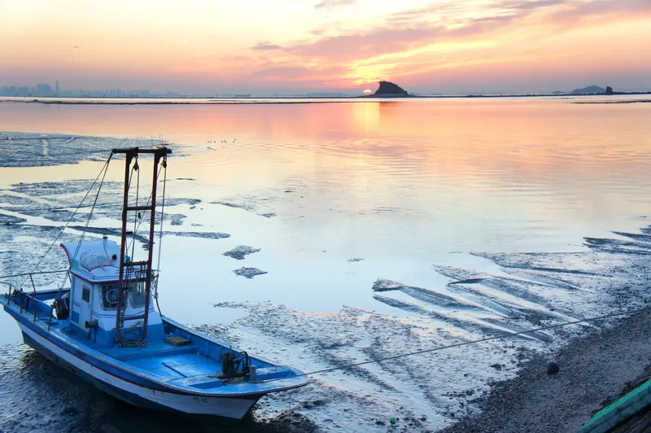
영종구영종도에서 무의도로 넘어가는 길목의 작은 해변. 샤크섬 사이로 지는 해가 '드롭 일출·일몰'로 유명해 사진작가들이 즐겨 찾습니다.
광화문을 기준으로 정서(正西) 끝에 있는 나루터. 경인아라뱃길의 종점으로, 붉은 해가 바다 위로 지는 노을종 앞은 인천을 대표하는 해넘이 명소입니다.
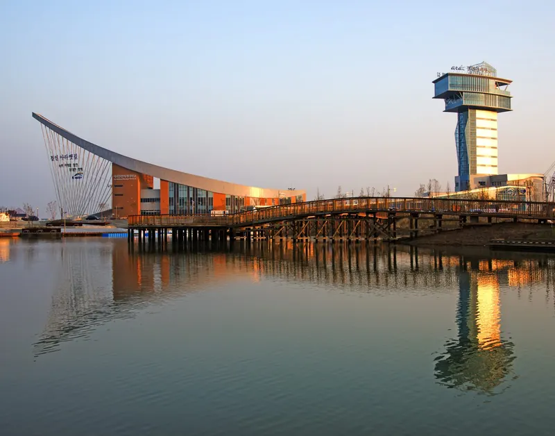
서해구23층 전망대에서 서해와 아라뱃길을 조망. 1층 홍보관에서 뱃길의 역사와 생태, 운하 이야기를 체험할 수 있습니다.
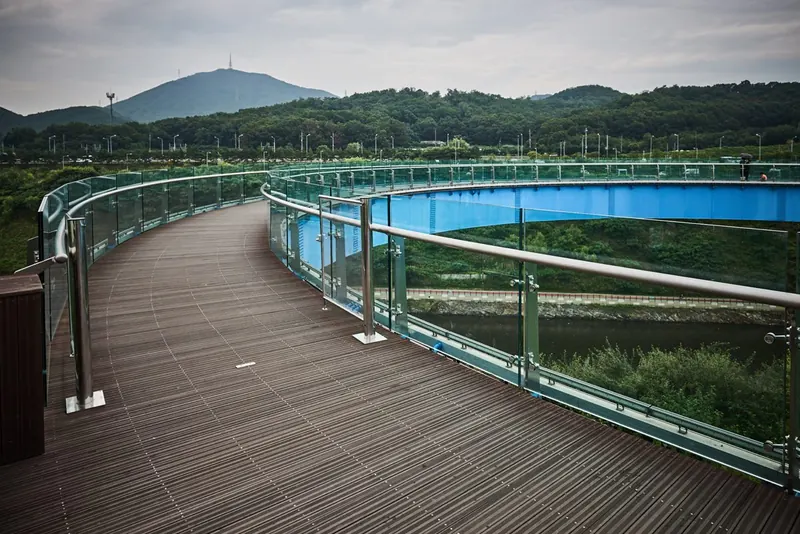
서해구아라뱃길 위에 세워진 원형 전망대. 수로를 따라 자전거·산책 코스가 이어지며 아라폭포와 함께 둘러보기 좋습니다.
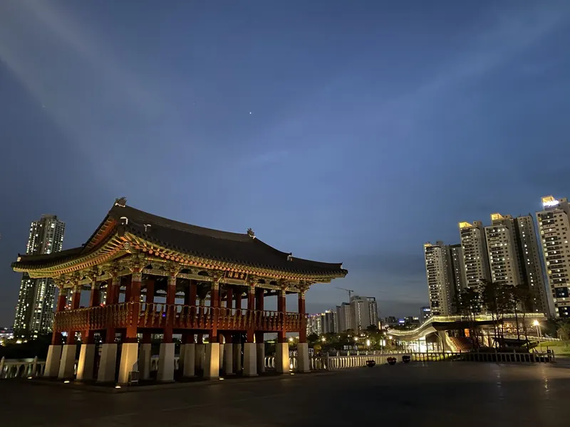
서해구청라국제도시를 대표하는 친수공간. 저녁이면 호수 위 음악분수와 조명이 어우러진 야경이 펼쳐집니다. 2026년 개관한 청라 하늘대교 전망대 SKY184와 연계해 둘러보세요.
계양산 협곡 지형을 활용해 조성한 인공폭포. 하얗게 떨어지는 물줄기와 함께 시원한 정취를 느낄 수 있어 여름철 무더위를 피해 찾는 이들의 발길이 이어집니다.
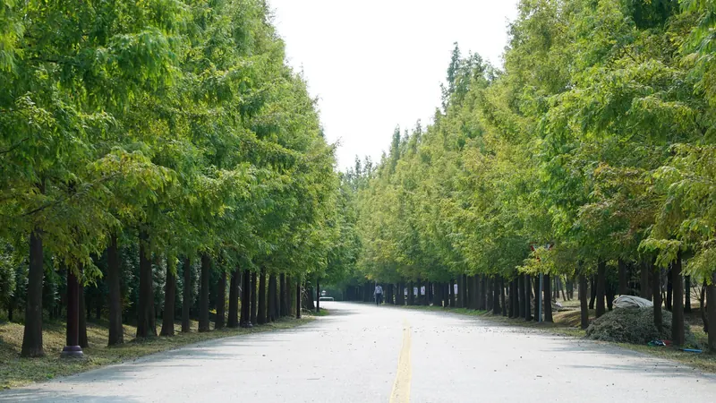
검단구수도권매립지를 시민의 휴식 공간으로 바꾼 생태공원. 계절마다 야생화 군락이 펼쳐지며 가을 국화축제로 유명합니다.
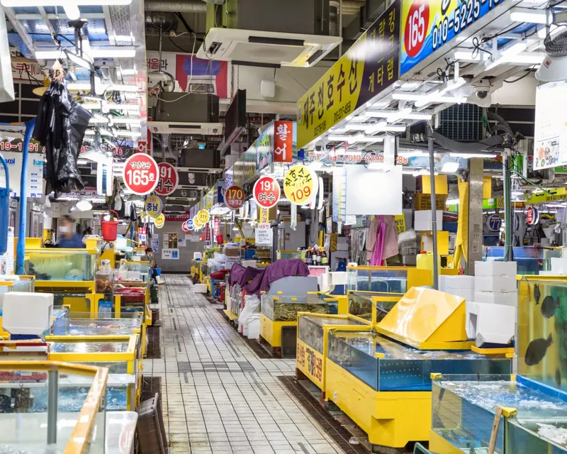
남동구수도권 대표 수산시장. 꽃게·새우·젓갈 등 제철 해산물을 어민에게 직접 사서 즉석에서 맛볼 수 있고, 소래철교와 소래역사관(협궤열차)도 함께 둘러볼 수 있습니다.
옛 염전과 갯벌을 보존한 생태공원. 풍차와 갈대밭, 소금창고가 어우러진 풍경이 사계절 사진 명소이며 가을 억새가 특히 아름답습니다.
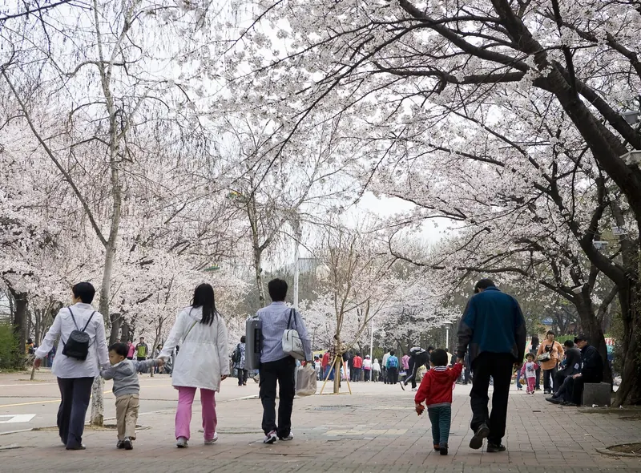
남동구관모산과 소래산 자락 266만㎡의 도심 속 자연공원. 봄 벚꽃과 튤립, 어린이동물원, 식물원, 호수가 있어 가족 나들이에 최적입니다.
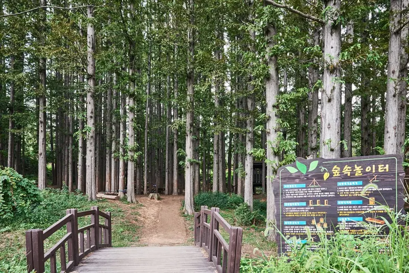
남동구소나무 숲길을 따라 천천히 걷는 산책 공원. 주민들의 산림욕 명소로, 짧은 트레킹과 쉼이 어우러집니다.
2002 월드컵 경기장과 야구장이 함께 있는 종합경기장. 대형 콘서트와 스포츠 이벤트의 중심이며, 민선 9기 '제문부 프로젝트'에서 K-컬처 거점으로 조명받는 곳입니다.
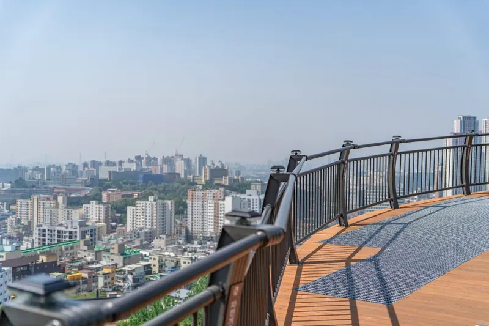
미추홀구수봉산 정상부에 조성된 310m 스카이워크. 인천 도심 360도 조망과 밤이면 별빛축제 조명이 펼쳐지는 원도심의 새로운 전망 명소입니다.
국내 최대 규모 지하상가와 이어지는 부평시장, 그리고 감각적인 카페가 모인 평리단길. 생활문화 거점으로 지정된 부평의 활기를 느껴보세요.
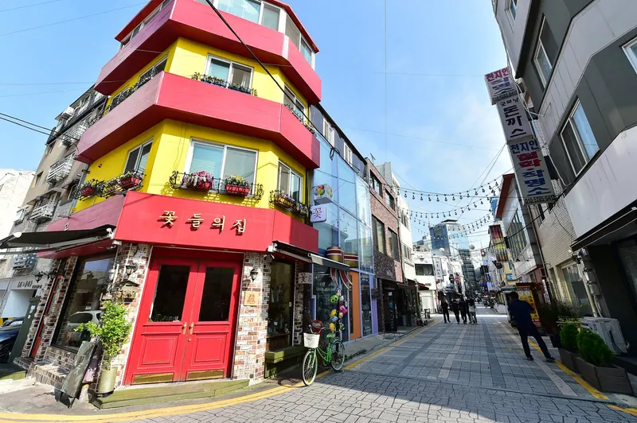
부평구부평지하상가에서 이어지는 골목에 감각적인 카페와 소품숍이 모인 거리. 젊은 감성의 로컬 문화를 즐기기 좋습니다.
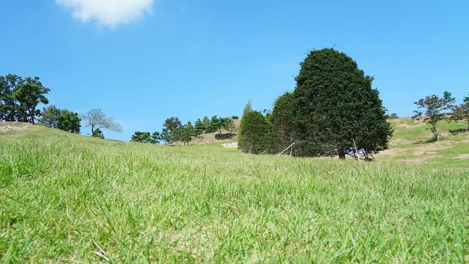
계양구해발 395m, 인천의 상징 산. 능선길을 따라 오르면 한강과 경인아라뱃길, 서해까지 한눈에 담기는 도심 속 트레킹 명소입니다.
계양 기슭에 조성된 대규모 초화단지. 봄에는 유채, 가을에는 코스모스가 장관을 이루며 산책로와 포토존이 잘 갖춰져 있습니다.
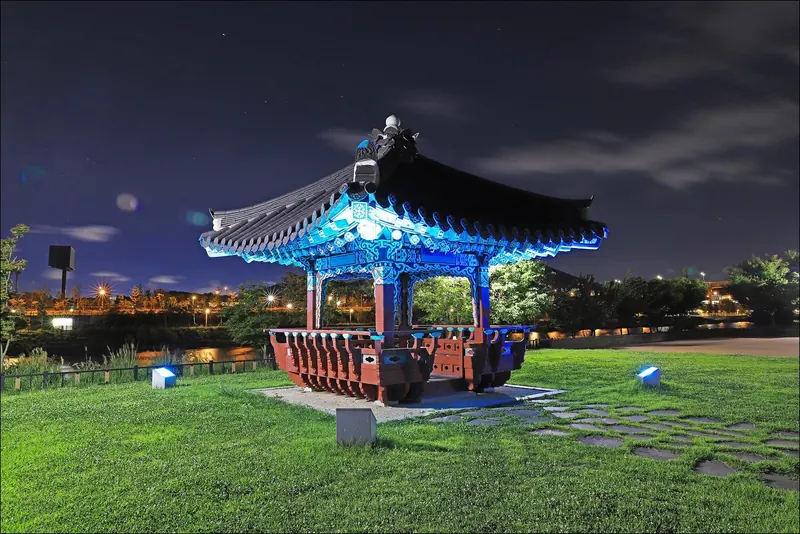
계양구경인아라뱃길 계양 구간에 마련된 수변문화공간. 전통정원을 중심으로 산책로와 수변무대가 있고, 달빛 조명이 켜진 밤 풍경이 아름답습니다.
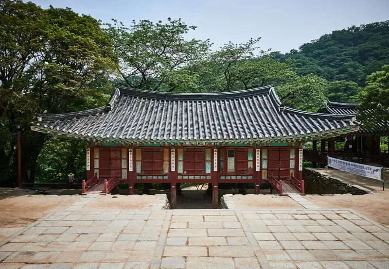
강화군고구려 소수림왕 때 창건된 것으로 전하는 강화 대표 사찰. 정족산성 안에 자리해 숲길과 전각, 템플스테이로 깊은 휴식을 줍니다. 인천공항 환승투어 코스로도 운영됩니다.
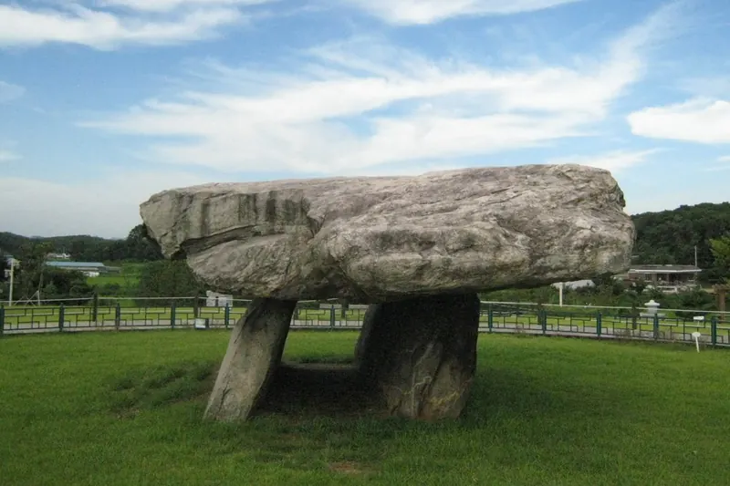
강화군길이 7m, 무게 80톤에 이르는 국내 최대 규모의 탁자식 고인돌. 유네스코 세계문화유산으로 선사시대 사람들의 삶과 의식을 보여줍니다.
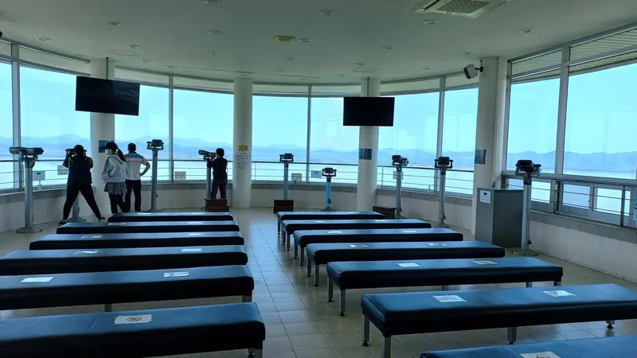
강화군북한과 가장 가까운 거리에서 마주하는 전망대. 망원경으로 황해도 송악산과 개성 시가지까지 관찰할 수 있어 분단의 현실과 평화의 가치를 되새기게 합니다.
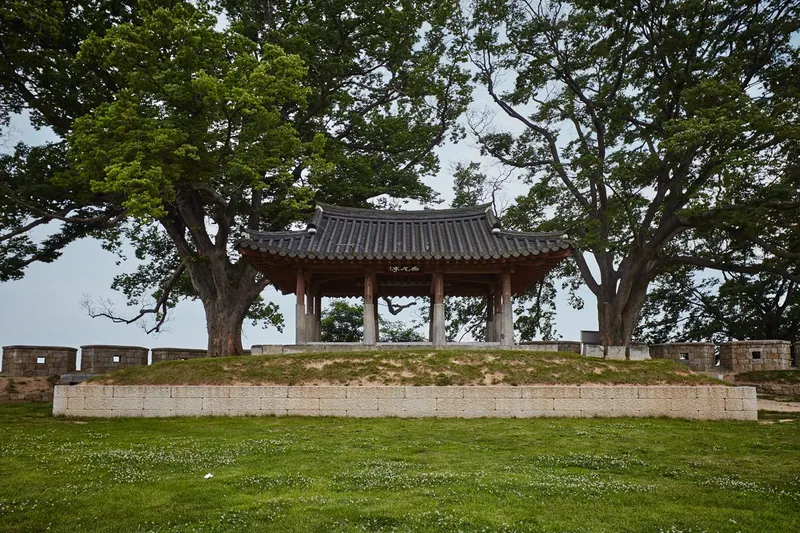
강화군임진강과 한강이 만나는 절벽 위에 자리한 정자. 수백 년 된 느티나무 아래에서 강 건너 풍경과 고요한 역사의 시간을 마주합니다.
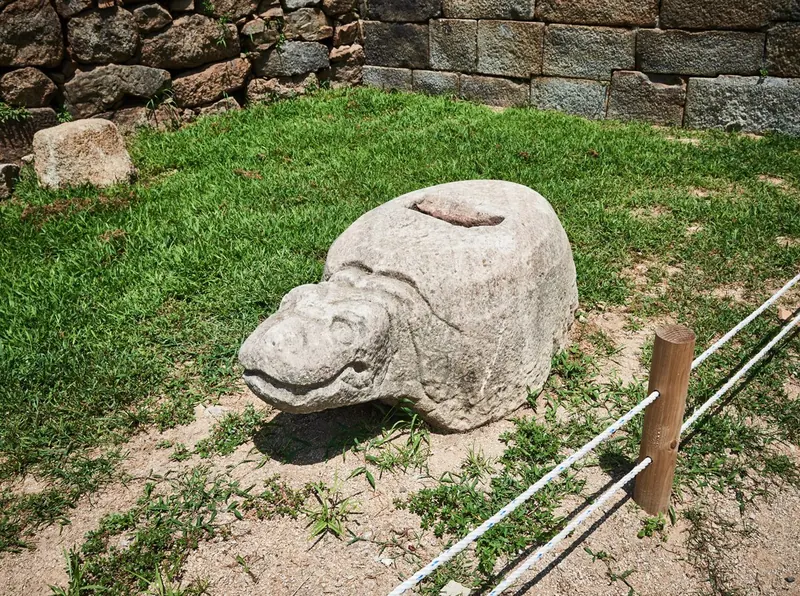
강화군6·25 이후 실향민들이 고향 연백시장을 본떠 만든 전통시장. 1960~70년대 골목 풍경이 그대로 남아 레트로 감성이 가득하며, 고려 인종 5년 창건 교동향교와 망향대도 함께 둘러보세요.
옹진군오랜 시간 바다가 빚은 기암괴석의 절경. 유람선을 타면 두무진의 전경을 한눈에, 도보로 오르면 북한 땅이 눈앞에 펼쳐집니다. 사곶해변(천연비행장)과 콩돌해안도 백령도의 명소.
옹진군세계적으로 드문 천연 모래 활주로. 밀물 때는 바다에 잠기고 썰물 때는 단단한 모래밭이 드러나 비행기가 착륙할 수 있을 정도입니다.
 옹진군
옹진군바람이 만든 한국의 사막. 해풍에 실려온 모래가 쌓인 언덕에 낙타 조형물이 있어 이국적인 사진을 남길 수 있고, 농여해변과 서풍받이 절벽도 함께 둘러보세요.
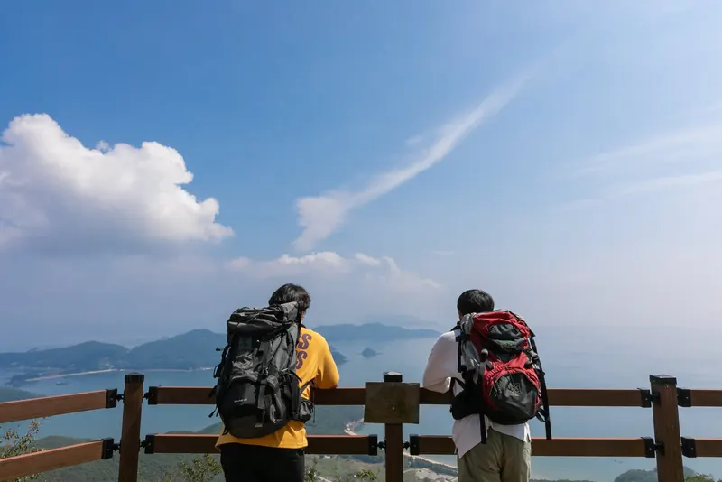
옹진군인천항에서 쾌속선 1시간, 서포리해수욕장의 노송 숲과 비조봉 트레킹으로 '살아보기형' 여행에 어울리는 섬. 인근 소야도·굴업도 캠핑과 연계됩니다.
 옹진군
옹진군'한국의 갈라파고스'라 불리는 백패킹 성지. 개머리언덕의 초원 위 캠핑과 별빛, 해식 지형이 어우러진 섬입니다. 수용력이 작으므로 흔적 남기지 않기 원칙을 지켜주세요.
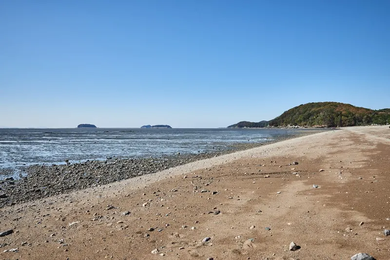
옹진군영종 삼목선착장에서 배로 40분. 갯티길 트레킹과 옹암·한들해수욕장, 가막머리 낙조대가 있어 당일 섬 여행에 알맞습니다.
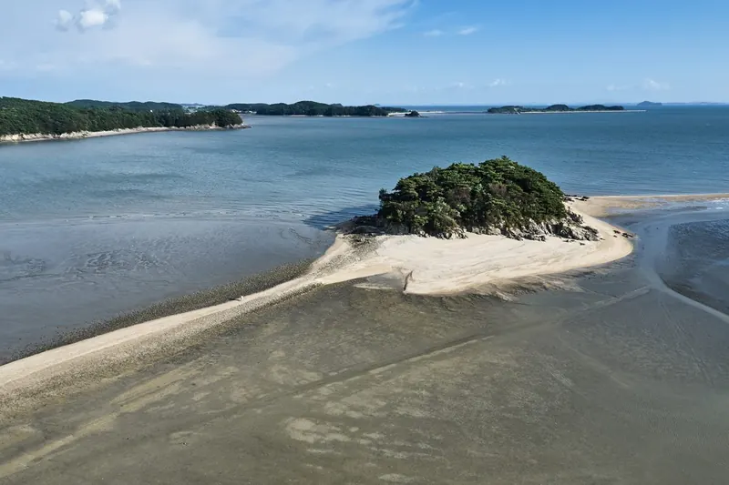
옹진군썰물 때 바닷길이 열리는 목섬은 CNN이 선정한 '한국의 아름다운 섬'. 다리로 연결되어 자가용으로 갈 수 있는 영흥도의 해변·카페와 묶어 1박 2일 코스로 좋습니다.
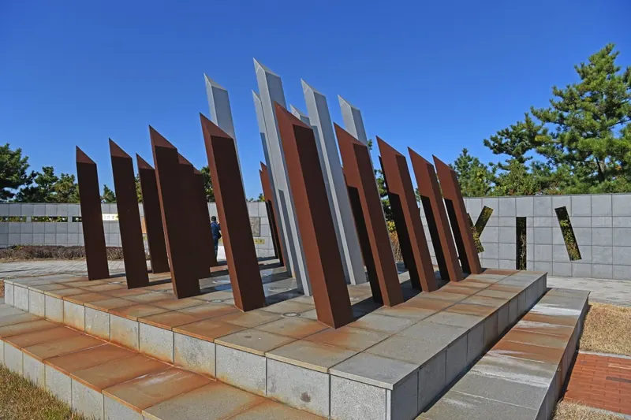
옹진군연평해전에서 전사한 군인들의 희생을 기리는 공원. 안보교육장과 망향전망대에서 분단의 현실과 서해 최전선의 삶을 돌아봅니다.

2026 인천관광가이드북(인천관광공사)이 제안하는 '놓칠 수 없는 공간들' 9곳. 가이드북에서 추천코스를 확인하세요.